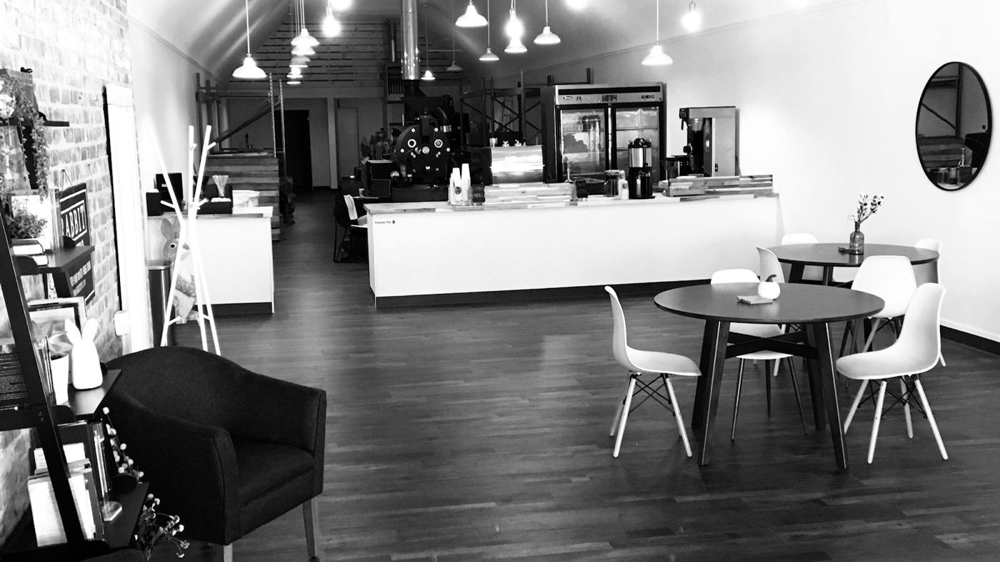
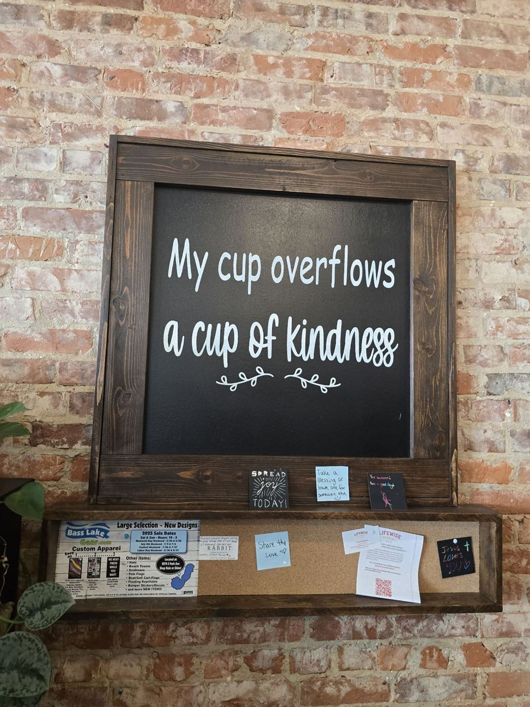

Roasted on site · Knox, Indiana
Fresh roasted. Right on Main.
Beans roasted in the shop, a big drink menu and a bright, open room on S Main St.
4.9★ · 126 Google reviews




Wonderful coffee and smells. There were a selection of treats but didn't try this time. Picked up a pound of…
Our family loves Rabbit Coffee. Its not unusual to see familes on Saturday morning's enjoying a coffee or…
My wife and I visited this shop for coffee. The staff was friendly and the atmosphere was nice including the…
I came here for the first time today. I was in search of a new coffee shop since I'm new to the area. I LOVED…
Love this coffee shop. It's a sweet spot to get some great coffee. They have some nice treats to and if your…
Most amazing owners. Met them at the Chesterton European Market. The coffee is so much better than any other…
Wonderful coffee and smells. There were a selection of treats but didn't try this time. Picked up a pound of…
Our family loves Rabbit Coffee. Its not unusual to see familes on Saturday morning's enjoying a coffee or…
My wife and I visited this shop for coffee. The staff was friendly and the atmosphere was nice including the…
I came here for the first time today. I was in search of a new coffee shop since I'm new to the area. I LOVED…
Love this coffee shop. It's a sweet spot to get some great coffee. They have some nice treats to and if your…
Most amazing owners. Met them at the Chesterton European Market. The coffee is so much better than any other…
Behind the bar
Take home freshly roasted beans, espresso included.
Mocha lattes and a cold brew caramel latte with a smooth finish.
A Saturday-morning favorite with local families.
A small selection of treats. Sugar-free syrup is available.
Find us
RABBIT COFFEE
10 S Main St, Knox, IN 46534
(219) 508-5779
*** THANK YOU ***